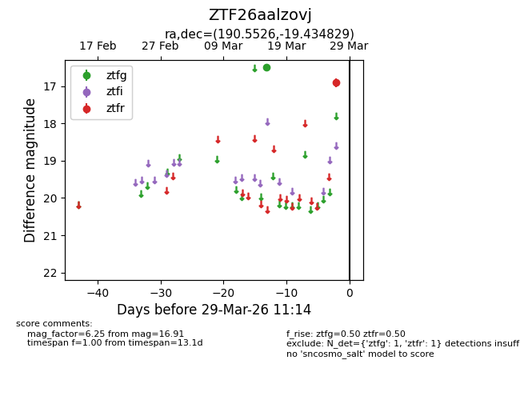
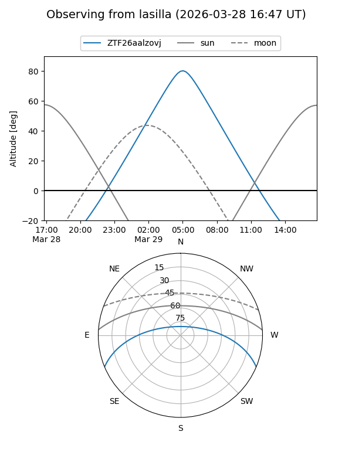
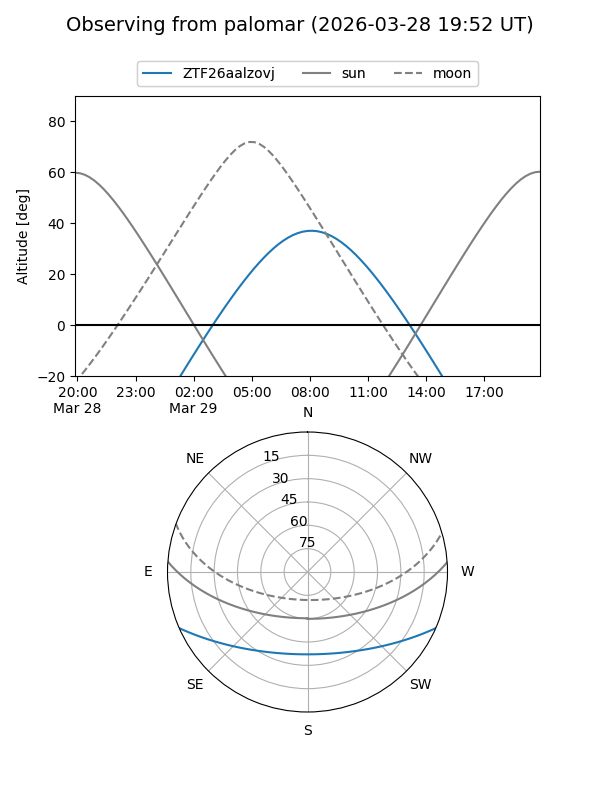

ZTF26aalzovj
Target ZTF26aalzovj at 2026-03-29 11:17
Aliases and brokers:
FINK: link
Lasair: link
ALeRCE: link
alt names
ZTF26aalzovj (ztf,fink_ztf)
Coordinates:
equatorial (ra, dec) = 190.5526,-19.43483
equatorial (HMS+DMS) = 12:42:12.62,-19:26:05.38
galactic (l, b) = (299.9381,+43.38327)
Flags:
Photometry:
last ztfg=16.50, ztfr=16.91
1 ztfg, 1 ztfr detections
Lightcurve

Visibility


Additional plots